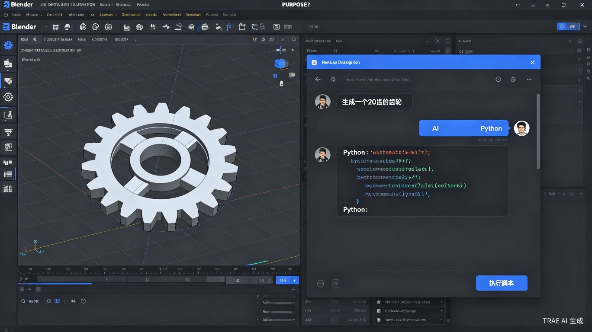
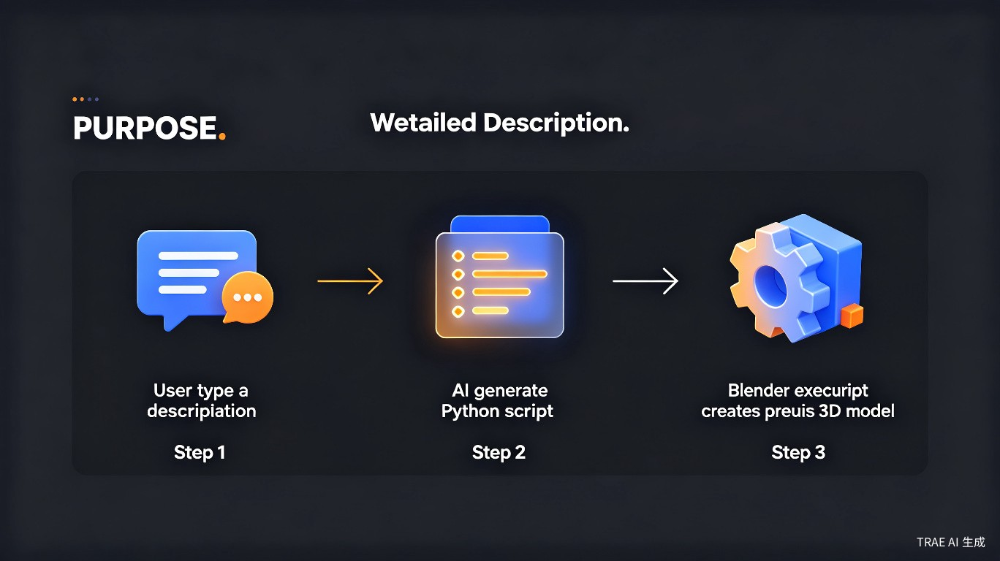

1创意名称 + 创意介绍
想解决什么问题
当前大多数生成式 AI 只能产出抽象、近似的 3D 模型，无法按照用户意图生成尺寸精确、结构规律的零部件或工程图形。本创意旨在解决这一痛点，让 AI 成为 Blender 用户的精准建模助手。
灵感来源
一次在 Blender 中打开 Python 脚本编辑器时，我意识到：大语言模型极其擅长生成代码，而 Blender 拥有完善的 Python API。如果能将两者连接——让 AI 直接生成 Blender Python 脚本并自动执行——就能实现"说一句话，模型自动生成"的愿景。
产品形态
一款 Blender 插件，内置 AI 对话面板。用户用自然语言描述需求，AI 生成对应的 Python 脚本，插件自动在 Blender 中执行，瞬间生成精确的 3D 模型。

2目标用户及痛点
核心用户
使用 Blender 进行 3D 建模的设计师、工程师、学生及爱好者
使用场景
需要快速生成齿轮、螺丝、建筑构件等有规律且尺寸精确的模型时
当前痛点
生成式 AI 出图模糊；手动建模耗时；需记忆大量快捷键与操作指令
痛点详解
- 精度缺失：现有 AI 生成的是"看起来像"的模型，无法满足工程级精度要求
- 效率低下：重复性规律模型（如阵列、螺纹、齿轮）仍需手工一步步搭建
- 学习门槛高：Blender 操作复杂，新手需要长时间学习才能独立完成建模
- 创意受限：用户有想法但受限于技术能力，难以快速将概念转化为可编辑模型

3价值与意义
效率提升
传统方式生成一个 20 齿齿轮可能需要 10-15 分钟的手工操作，而使用本插件只需输入一句话、点击执行，几秒钟即可完成。对于需要大量重复性规律模型的场景，效率提升可达 10 倍以上。
降低学习成本
用户不再需要记忆 Blender 的数百个快捷键和复杂操作流。通过自然语言与 AI 交互，零代码基础的用户也能生成专业级模型，大幅降低 3D 建模的学习门槛。
商业价值
可面向工业设计、建筑设计、游戏资产制作等领域提供付费插件或 SaaS 服务。精准建模是生成式 AI 尚未攻克的蓝海市场，具有显著的差异化竞争优势。
| 对比维度 | 传统手动建模 | 普通 AI 生成 | 本方案（AI + 脚本） |
|---|---|---|---|
| 模型精度 | 极高（可控） | 低（近似） | 高（参数化精确） |
| 生成速度 | 慢（分钟级） | 快（秒级） | 快（秒级） |
| 可编辑性 | 原生可编辑 | 差（网格固化） | 原生可编辑（参数保留） |
| 学习成本 | 高 | 低 | 低 |
4技术实现示意
插件的核心逻辑分为三层：
- 交互层：Blender 侧边栏面板，提供自然语言输入框与历史记录
- AI 层：调用大语言模型 API，将用户描述转化为 Blender Python 脚本
- 执行层：在 Blender 内部安全执行生成的脚本，实时反馈结果
示例：生成一个 20 齿齿轮
# 用户输入："生成一个20齿、模数2、厚度5mm的齿轮" # AI 自动生成并执行的 Blender Python 脚本： import bpy import math # 齿轮参数 teeth = 20 module = 2.0 thickness = 5.0 pitch_diameter = teeth * module # 创建齿轮基础圆柱 bpy.ops.mesh.primitive_cylinder_add( vertices=teeth * 4, radius=pitch_diameter / 2, depth=thickness / 1000 # 转换为米 ) # 添加齿形细节... print("齿轮生成完成！")
"脚本即模型"——每一行代码都对应精确的建模操作，确保生成的模型 100% 可编辑、可复用、可参数化调整。
5未来展望
模型库积累
建立常用零部件脚本模板库，支持一键调用标准件（螺栓、螺母、轴承等）
参数化调整
生成后保留参数滑块，用户可实时调整尺寸、齿数等关键参数
多模型支持
扩展支持 Maya、C4D 等其他 3D 软件的脚本生成